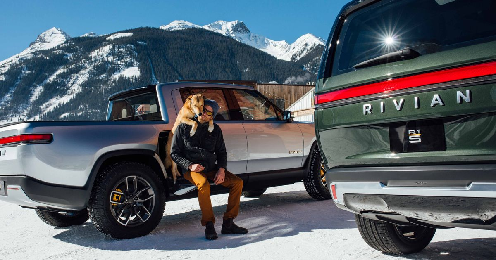

What is Rivian?
Rivian Automotive, founded by Robert "R.J." Scaringe, is coming up fast in the rearview mirror of high-profile electric carmaker Tesla Inc. (TSLA). Largely unknown outside of automotive circles, the privately-held maker of premium electric sport utility vehicles (SUVs) and pickup trucks has yet to sell a vehicle.
The company confidentially filed for an initial public offering on Aug 27, 2021 that valued the electric vehicle maker at around $80 billion, according to reports at the time. Back then, Rivian expected to have an initial public offering (IPO) as soon as mid-November, according to Bloomberg. On Nov. 1, 2021, a variety of reports emerged indicating that Rivian now would seek a valuation ranging from $53 billion to somewhere above $60 billion. The IPO may come to market as early as the week beginning on Monday, Nov. 8, 2021, and trade on NASDAQ under the ticker symbol RIVN.1
On Nov. 1, 2021, a variety of reports emerged indicating that Rivian now would seek a valuation ranging from $53 billion to somewhere above $60 billion. The IPO may come to market as early as the week beginning on Monday, Nov. 8, 2021, and trade on NASDAQ under the ticker symbol RIVN.
More About Rivian
Outdistancing Tesla

Rivian's SUV model, called the R1S, looks similar to the Range Rover, made by Land Rover, and competes with Tesla's Model X. Rivian's electric pickup truck model is called the R1T and has a shorter flatbed than the Ford 150, Ford's top selling pickup truck, the Times notes. Elon Musk has indicated that Tesla will offer a pickup, but has not released a design.
The R1S SUV may pose the biggest threat to Tesla. Depending on the choice of battery pack, the Rivian R1S promises to deliver from 240 to 410 miles of driving between charges, per InsideEVs.com. That's much farther than the Tesla Model X, which can be driven only 237 to 295 miles. Both vehicles offer 3 rows of seating, but InsideEVs estimates that the R1S is slightly more roomier, given that its roofline does not slope like the Model X.
The R1S and the R1T are expected to have selling prices starting at $70,000 and reaching $90,000 for fully-loaded models, per the Times. Rivian indicates that it has tens of thousands of reservations, for a deposit of $1,000 each.
Who Is R.J. Scaringe?
While earning his doctorate at MIT, Scaringe worked with top engineers from major automakers at the prestigious Sloan Automotive Laboratory, per Bloomberg. After rebuilding vintage Porsches as a youth, Scaringe began dreaming of founding his own car company at age 18, the Times says. “I wanted to have an impact, and the highest-impact approach was to build the company myself,” he said, regarding his concerns about climate change and air pollution.
Dispelling 'Untruths'
Scaringe is determined to shatter conventional views about electric vehicles. “We have a number of untruths--a truck can’t be electric, an electric car can’t go off road, it can’t get dirty, it can’t tow, and truck buyers don’t want something that’s environmentally friendly,” Scaringe told the Times. “These things are fundamentally wrong. Electrification and technology can create a truck that’s incredibly capable and fun to drive,” he added.
An avid outdoorsman and mountain biker, Scaringe insists that his vehicles can go off road, navigating 3 feet of standing water, and with a hardened undercarriage that protects the battery pack from damage due to rocks and other objects. That view runs counter to that of some industry experts. “Rivian’s products are not really meant to be work trucks,” counters Stephanie Brinley, principal automotive analyst with IHS Markit, per the Times. “They aim to be lifestyle products, capable but meant for recreational use,” she elaborated.